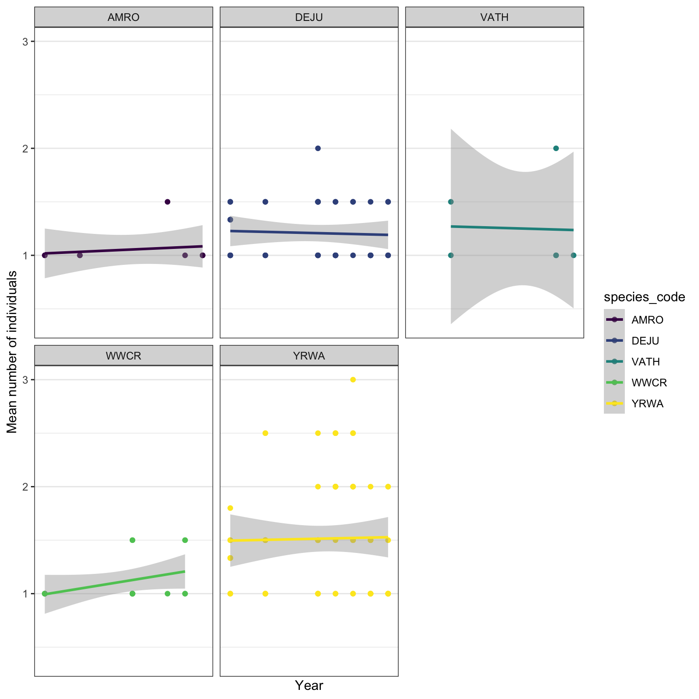
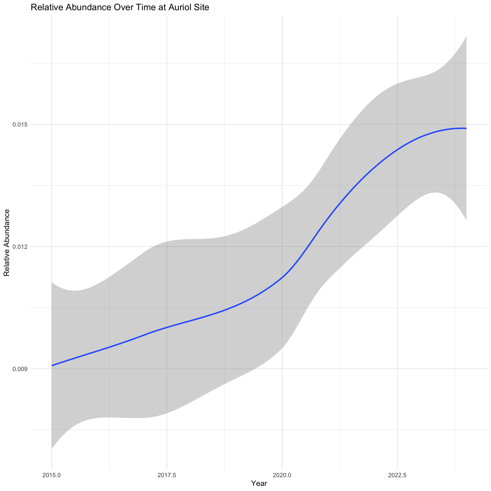

Report on the use of passive acoustic monitoring in Kluane National Park Reserve

Abstract
Passive acoustic monitoring has proven to be a valuable tool for studying vocalizing species. Environmental sensors are becoming increasingly easy to program and can autonomously generate extensive data sets of the soundscape, becoming an invaluable resource for ecological integrity monitoring. Kluane National Park Reserve deployed autonomous recording units (ARUs) across 37 locations in 2023, participating in the national prescribed Burn protocol. ARUs detected a total of 42 species including birds and mammals. Sustained monitoring of these areas following prescribed burns, incorporating enhanced protocols for equipment functionality, as well as broader scope in recording and data collection, will optimize the effectiveness of the ongoing monitoring program. Future data collection can be facilitated by more advanced models and analyses.
This report is dynamically generated, meaning its results may evolve with the addition of new data or further analyses. For the most recent updates, feel free to reach out to the authors or refer to the publication date.
Land Acknowledgement
In the spirit of Reconciliation, we respectfully acknowledge that the lands of Kluane National Park Reserve where this study took place are the traditional territories of the Southern Tutchone people represented in the Kluane region by the Champagne and Aishihik First Nations and the Kluane First Nation. Champagne and Aishihik First Nations, Kluane First Nation and Parks Canada are jointly responsible for the management of Kluane’s natural and cultural resources.
Introduction
Human activities have been identified as key pressures and contributors to the global decline in forest wildlife (Allan et al. (2017)). The repercussions of habitat fragmentation (Fahrig (2003)) and loss (Hanski (2011)), climate change (Mantyka-pringle, Martin, and Rhodes (2012), Sattar et al. (2021), Abrahms et al. (2023)), and increased access to sensitive areas exert direct and indirect pressures on forest biodiversity, particularly in managed regions in Canada (Lemieux et al. (2011)).
Forests of the Kluane National Park and Reserve are currently experiencing a severe fire deficit, with a 71% departure in the estimated area burned from the historic area burned (see 2017 Kluane National Park and Reserve State of the Park Technical Compendium). The area also saw a significant spruce bark beetle infestation over the 1990s to 2000s. It is estimated that over 49,000 ha were affected and, on average, almost half of the mature spruce trees were killed in affected forests. Given that climate change scenarios consistently indicate hotter temperatures and a longer growing season for Kluane forests, disturbance from wildfires, insect outbreaks, and other direct and indirect effects, are likely to cause major changes to the forest structure in the future. A project funded within the Conservation and Restoration (CoRe) program aimed to achieve measurable conservation gains towards the effective and enduring restoration of ecological integrity: Dákeyi ukaanathį̀ jè: All of you watch over our country with your heart is a 5-year project with objectives to increase the resilience of Kluane forests and restore fire to its ecosystems. Western and Indigenous knowledge systems will inform a long-term restoration plan, supported by the learnings from prescribed burn trials and alternate/complementary conservation activities. In 2023, Kluane National Park Reserve initiated a program incorporating autonomous recording units (ARUs) for passive acoustic monitoring (PAM) of bird populations in forest habitat, being an integral component of the forest health measures. ARUs are compact environmental sensors that are designed to passively record the environment (Shonfield and Bayne (2017)), capturing vocalizing species like birds and amphibians, which is growing in use across the globe (Sugai et al. (2018)). This technology enables resource managers to conduct prolonged surveys with minimal human interference. The subsequent data collected by these units contribute valuable information to ecological integrity metrics such as species richness, diversity, occupancy, and trends over time. This data aids decision-making and management within the Park. Given the rapid and ease of accumulating large amounts of data from these units, maintaining a high standard of data integrity is paramount to ensure future data interoperability and sharing. WildTrax is an online platform developed by the Alberta Biodiversity Monitoring Institute (ABMI) for users of environmental sensors to help addresses these big data challenges by providing solutions to standardize, harmonize, and share data.
The objectives of this report are to:
- Describe the data management and processing procedures for the acoustic data collected in 2023;
- Utilize traditional human tagging to detect and count species heard on recordings;
- Define straightforward methods for evaluating species presence, species richness, species diversity and species occupancy;
- Offer recommendations for ongoing monitoring approaches to contribute to the assessment of ecological integrity in forest ecosystems and prescribed burn management in the park;
- Facilitate data publication to the public, resource managers, academic institutions, and any other relevant agencies
Methods
Data collection and management
Data were collected during spring and summer of 2015. A total of 37 locations were surveyed, encompassing sites at Alder Creek (AC-) and Jarvis River (JR-), each with five locations. In each site, 3 locations were designated for a prescribed burn in 2024 (treatment, e.g. AC-T1), with 2 locations serving as unburned controls (e.g. JR-C1). 3 locations were within the area also being considered for a prescribed fire in future seasons (2025 - ). ARU were deployed across locations throughout the season, as outlined in Table 1 (Table 1) and depicted in Figure 1 (Figure 1). ARUs were deployed at the onset of the breeding bird season (May-June) and rotated among locations until retrieval in July-August. Each ARU recorded for an average of 5.4 +/- 2.12 days. Recording schedules were standardized, comprising morning sessions at 05:30, 06:30, and 07:30, and evening sessions at 22:45 and 23:45. Evening recordings targeted species such as Varied Thrush, Common Nighthawk, and owls. Station installations remained constant throughout the monitoring period, with Alder Creek stations established in late May and Jarvis River in June.

A total of 206 recordings were collected. Data were transferred via SD cards to the University of Alberta in Edmonton, where they are redundantly stored on a server known as Cirrus. The recordings were standardized to ensure adherence to the naming convention of LOCATION_DATETIME, such as AC-T1_20230625_053500.wav. All recordings designated for processing were directly uploaded to WildTrax and can be downloaded from the platform’s Recording tab, accessible under Manage > Download list of recordings (see Figure 2).
| Location | type | 2015 | 2017 | 2020 | 2021 | 2022 | 2023 | 2024 | Site | Treatment |
|---|---|---|---|---|---|---|---|---|---|---|
| A1 | Bird | 1 | 1 | 1 | 1 | 1 | 1 | 1 | Auriol Trail | Ecological Integrity |
| A10 | Bird | 1 | 1 | 1 | 1 | 1 | 1 | 1 | Auriol Trail | Ecological Integrity |
| A11 | Bird | 1 | 1 | 1 | 1 | 1 | 1 | 1 | Auriol Trail | Ecological Integrity |
| A12 | Bird | 1 | 1 | 1 | 1 | 1 | 1 | 1 | Auriol Trail | Ecological Integrity |
| A2 | Bird | 1 | 1 | 1 | 1 | 1 | 1 | 1 | Auriol Trail | Ecological Integrity |
| A3 | Bird | 1 | 1 | 1 | 1 | 1 | 1 | 1 | Auriol Trail | Ecological Integrity |
| A4 | Bird | 1 | 1 | 1 | 1 | 1 | 1 | 1 | Auriol Trail | Ecological Integrity |
| A5 | Bird | 1 | 1 | 1 | 1 | 1 | 1 | 1 | Auriol Trail | Ecological Integrity |
| A6 | Bird | 1 | 1 | 1 | 1 | 1 | 1 | 1 | Auriol Trail | Ecological Integrity |
| A7 | Bird | 1 | 1 | 1 | 1 | 1 | 1 | 1 | Auriol Trail | Ecological Integrity |
| A8 | Bird | 1 | 1 | 1 | 1 | 1 | 1 | 1 | Auriol Trail | Ecological Integrity |
| A9 | Bird | 1 | 1 | 1 | 1 | 0 | 1 | 1 | Auriol Trail | Ecological Integrity |
| Q1 | Bird | 0 | 0 | 0 | 0 | 1 | 0 | 0 | Quill Creek | Ecological Integrity |
| Q10 | Bird | 0 | 0 | 0 | 0 | 1 | 0 | 0 | Quill Creek | Ecological Integrity |
| Q11 | Bird | 0 | 0 | 0 | 0 | 1 | 0 | 0 | Quill Creek | Ecological Integrity |
| Q12 | Bird | 0 | 0 | 0 | 0 | 1 | 0 | 0 | Quill Creek | Ecological Integrity |
| Q2 | Bird | 0 | 0 | 0 | 0 | 1 | 0 | 0 | Quill Creek | Ecological Integrity |
| Q3 | Bird | 0 | 0 | 0 | 0 | 1 | 0 | 0 | Quill Creek | Ecological Integrity |
| Q4 | Bird | 0 | 0 | 0 | 0 | 1 | 0 | 0 | Quill Creek | Ecological Integrity |
| Q5 | Bird | 0 | 0 | 0 | 0 | 1 | 0 | 0 | Quill Creek | Ecological Integrity |
| Q6 | Bird | 0 | 0 | 0 | 0 | 1 | 0 | 0 | Quill Creek | Ecological Integrity |
| Q7 | Bird | 0 | 0 | 0 | 0 | 1 | 0 | 0 | Quill Creek | Ecological Integrity |
| Q8 | Bird | 0 | 0 | 0 | 0 | 1 | 0 | 0 | Quill Creek | Ecological Integrity |
| Q9 | Bird | 0 | 0 | 0 | 0 | 1 | 0 | 0 | Quill Creek | Ecological Integrity |
| AC-BAT | Bat | 0 | 0 | 0 | 0 | 0 | 1 | 1 | Alder Creek | Bat Monitoring |
| AC-C2 | Bird | 0 | 0 | 0 | 0 | 0 | 1 | 1 | Alder Creek | Control |
| AC-T1 | Bird | 0 | 0 | 0 | 0 | 0 | 1 | 1 | Alder Creek | Prescribed Burn |
| AC-T2 | Bird | 0 | 0 | 0 | 0 | 0 | 1 | 0 | Alder Creek | Prescribed Burn |
| JR-C1 | Bird | 0 | 0 | 0 | 0 | 0 | 1 | 1 | Jarvis River | Control |
| JR-C2 | Bird | 0 | 0 | 0 | 0 | 0 | 1 | 1 | Jarvis River | Control |
| JR-T1 | Bird | 0 | 0 | 0 | 0 | 0 | 1 | 1 | Jarvis River | Prescribed Burn |
| JR-T2 | Bird | 0 | 0 | 0 | 0 | 0 | 1 | 1 | Jarvis River | Prescribed Burn |
| JR-T3 | Bird | 0 | 0 | 0 | 0 | 0 | 1 | 1 | Jarvis River | Prescribed Burn |
| JR-BAT | Bat | 0 | 0 | 0 | 0 | 0 | 0 | 1 | Jarvis River | Bat Monitoring |
| AC-C1 | Bird | 0 | 0 | 0 | 0 | 0 | 0 | 1 | Alder Creek | Control |
Community data processing
Data processing took place in WildTrax with the goal to describe the acoustic community of species heard at locations while choosing a large enough subset of recordings for analyses. To ensure balanced replication, for each location surveyed, four randomly selected recordings were processed for 3-minutes during the morning hours of 5:00 AM - 7:59 AM ideally on four separate dates (see Table 4). Four recordings will ensure that we have the minimum number of samples for a simple occupancy analysis (Darryl I. MacKenzie et al. (2002) and Darryl I. MacKenzie et al. (2003)). Tags are made using count-removal (see Farnsworth et al. (2002), Sólymos et al. (2018)) where tags are only made at the time of first detection of each individual heard on the recordings. In case a species was overly abundant a TMTT (‘too many to tag’) flag was used (see Table 3). 0% of the total tags were TMTT but were subsequently converted to numeric using wildRtrax::wt_replace_tmtt. We also verified that all tags that were created were checked by a second observer (n = 2.58%) to ensure accuracy of detections (see Table 2). Amphibian abundance was estimated at the time of first detection using the North American Amphibian Monitoring Program with abundance of species being estimated on the scale of “calling intensity index” (CI) of 1 - 3. Vocalizing mammals such as Red Squirrel, were also noted if heard on the recordings. After the data are processed in WildTrax, the wildRtrax package is use to download the data into a standard format prepared for analysis. The wt_download_report function downloads the data directly to a R framework for easy manipulation (see wildRtrax APIs).
| Tag is verified | Count | Proportion |
|---|---|---|
| FALSE | 822 | 72.49 |
| TRUE | 309 | 27.25 |
| NA | 3 | 0.26 |
| location | recording_date_time | species_code | individual_count |
|---|---|---|---|
| AC-C2 | 2023-06-06 06:30:00 | WWCR | TMTT |
| AC-T1 | 2023-06-21 07:30:00 | WWCR | TMTT |
| AC-T2 | 2023-05-27 07:30:00 | WWCR | TMTT |
| AC-T2 | 2023-06-01 05:30:00 | WWCR | TMTT |
| JR-T1 | 2023-06-21 06:30:00 | WWCR | TMTT |
| JR-T3 | 2023-06-06 07:30:00 | WWCR | TMTT |
Ultrasonic Methods
Full-spectrum recordings were collected at each station and processed using two automatic classifiers: Kaleidoscope’s Bats of North America 5.4.0 classifier and Sonobat 3.0’s Northwestern British Columbia classifier. The classifier settings are detailed in Appendix A. Based on species ranges and prior detections (Slough et al., 2022), manual identification using Kaleidoscope results was limited to Big Brown Bats (Eptesicus fuscus), Eastern Red Bats (Lasiurus borealis), Silver-haired Bats (Lasionycteris noctivagans), and Little Brown Bats (Myotis lucifugus).
All recordings assigned a species by Kaleidoscope or Sonobat were further reviewed and manually vetted. Species identifications were compared against call parameters described by Slough et al. (2022), Solick (2022), and Szewczak (2018) and adhered to NABat vetting standards (Reichert et al., 2018).
Results
Birds
In 2023, three locations (AC-C1, AC-T3) failed and did not complete their intended recording schedule. These failures could be due to either low batteries, SD card formatting issues or outdated firmware (see #discussion). In 2024, all locations successfully recorded their intended schedules. A total of 42 species were found. Figure 3 describes the relationship of species richness across each location. Species richness was equal between sites (Alder Creek, Jarvis River) and treatments combined across sites (control, treatments).

| species_code | species_common_name |
|---|---|
| 40KMYO | Various species of Myotis having a minimum frequency range between 30-45K |
| AMRO | American Robin |
| BOCH | Boreal Chickadee |
| CAJA | Canada Jay |
| CORA | Common Raven |
| DEJU | Dark-eyed Junco |
| NOISE | Noise |
| PIGR | Pine Grosbeak |
| PISI | Pine Siskin |
| RESQ | Red Squirrel |
| SWTH | Swainson’s Thrush |
| VATH | Varied Thrush |
| WWCR | White-winged Crossbill |
| YRWA | Yellow-rumped Warbler |



Ultrasonic data
The detectors ran for a total of 35 recorder nights and in total collected 8794 files. Of these 8776 were classified as noise files, with no distinguishable bat present. Of the remaining recordings the only species identified was little brown bats (6, Table 2). Recordings that had no diagnostic criteria for any species were classified as either 40kHz Myotis (calls with consistent minimum frequency with an Fc=35-45kHz) or high frequency group (bat calls with Fc>35kHz). No low frequency calls were recorded at either site. Due to the absence of any diagnostic calls for species other than the little brown bat the 40kHz Myotis and High Frequency recordings were likely produced by little brown bats.
Table 2: Results of manually classified recordings collected at two station in Kluane National Park in 2024.
| Species Group/Species | Code | AC-Bats | JR-Bats | Total |
|---|---|---|---|---|
| Little Brown Bat | MYLU | 6 | 0 | 6 |
| 40kHz Myotis | 40KMyo | 9 | 1 | 10 |
| High Frequency Bats | HighF | 2 | 0 | 2 |
| Noise | NOISE | 1623 | 7153 | 8776 |
| Total Bats | 17 | 1 |
Discussion
Improvements to EI monitoring for birds
Given the declining health of the forests in the Park, the observed low levels of species richness and diversity are unsurprising. Following prescribed burns, it is expected that the habitat will gradually support the emergence of new guilds and species as part of its natural regeneration process. Monitoring these locations will allow for the tracking of these changes over time. While this project has yielded promising results, there are several operational improvements necessary to fully realize its potential moving into next season. Some key recommendations include:
Extending survey window and recording schedule: Initiating the survey window to encompass resident and early-migrant species (early May) and extending it into the post-breeding season (mid-July) will capture a comprehensive range of species. Given the diverse migration timing and breeding patterns among species, extending the window can help to add additional species whose detectability is lower. Recording bird vocalizations throughout the deployment period at various times of the day–pre-dawn, dawn, post-dawn, pre-dusk, dusk, post-dusk, and night–enables a comprehensive assessment of bird diversity and activity patterns. Birds exhibit diverse diurnal and nocturnal behaviors, with some species being more vocal during specific times of the day or night. Continuous recording across different times allows ARUs to capture a broad spectrum of species, including those that are crepuscular or nocturnal, providing valuable insights into their behaviors and habitat preferences. This approach enhances the accuracy and completeness of bird surveys, offering valuable data for planning and management efforts.
Equipment maintenance and management: Given that 3 locations failed during their deployment, ensuring that equipment is properly functioning, tested and maintained prior to deployment is crucial for ensuring the success of a long-term monitoring program. The ABMI provides Equipment Protocols to help assist in the maintenance and deployment of most Wildlife Acoustics makes and models. Most importantly, ensure the units are cleaned and inspected for physical or mechanical damage, update the firmware and conduct tests to ensure functionality in a controlled environment.
Localized monitoring: Consistently deploying ARUs in the same locations on the landscape year after year will help to establish robust monitoring sites. By continuously surveying specific areas, changes in bird distribution and abundance can be monitored. This approach facilitates the identification of long-term trends and enables the understanding of changes in bird populations and guilds over time, especially with planned changes with the prescribed burns. Forest structure may be lost after a burn, however ARUs can be established in the same locations using different deployment methods (again see Equipment Protocols).
ARU deployment in prescribed burns: Deploying at least one ARU per 0.5 hectares burned ensures thorough monitoring of post-burn effects on bird populations. This density of ARU deployment generates detailed data on how bird populations respond to habitat changes following prescribed burns, facilitating the understanding of ecosystem resilience and recovery processes. By monitoring post-burn effects on bird populations, researchers can inform conservation strategies aimed at mitigating the impact of habitat disturbance. Given the guild changes seen in species communities post-burn it may be necessary to survey burned areas only every 1, 3 and 5-years post-burn along the length of the program.
Extending analyses: With the accumulation of additional data, it is recommended to conduct more sophisticated analyses, including utilizing dynamic occupancy models to effectively capture the fluctuations in species occupancy across sites over time. Exploring models aimed at examining the resilience of both individual species and community structure is suggested.
Recommendations for ultrasonic deployments
For future deployments, it is recommended to ensure recorder settings align with the NABat protocol (Loeb et al., 2015). Some recordings were collected during daytime hours, suggesting the recording schedule included non-target hours. NABat standards advise recording only from 30 minutes before sunset to 30 minutes after sunrise.
Both deployment locations were positioned near sources of ultrasonic noise (Figure 1), likely contributing to the large number of noise files in the analysis. Additionally, some noise files contained potential rodent vocalizations, which may be worth noting for future analyses. If feasible, relocating the sites away from ultrasonic noise sources is recommended. Alternatively, adjusting the recorder gain settings could help reduce noise file occurrences. In 2024, the gain was set to 12; reducing it to 0 could significantly decrease noise files and extend recorder battery life. While lower gain settings may reduce the detection of quieter species, the lack of evidence for these species this year suggests the benefits would outweigh this limitation.

- Bat monitoring enhancements: Continuing to use a sample rate to 256 kHz is advisable, given that bat species in western Canada typically do not vocalize beyond this frequency range. The sampling rate will also optimize the total amount of data volume collected and battery usage. It is also recommended to programming the Max Time Between Calls (TBC) by adjusting the trigger window from 3 to 2 seconds. The North American Bat Monitoring Program offers many additional recommendations for deployment, processing and interpretation of ultrasonic data.
Appendix A: Settings used for classifiers
Kaleidoscope Settings
Version: 5.6.8
[Global]
- Mode: 0
- Threads: 24
[Classifier]
- Classifier: classifiers-Bats_of_North_America_5.4.0
- ROC: 2
Enabled Species:
- EPTFUS: 1
- LASBOR: 1
- LASNOC: 1
- MYOLUC: 1
[Analysis]
- Frequency Minimum: 8
- Frequency Maximum: 120
- Duration Minimum: 2
- Duration Maximum: 40
- Maximum Gap: 500
- Minimum Calls: 1
- Filter ZC: 1
- Remove DC: 0
- CF Minimum Frequency: 0
- CF Maximum Frequency: 0
- CF Maximum Bandwidth: 0
References
Abrahms, Briana, Neil H Carter, TJ Clark-Wolf, Kaitlyn M Gaynor, Erik Johansson, Alex McInturff, Anna C Nisi, Kasim Rafiq, and Leigh West. 2023. “Climate Change as a Global Amplifier of Human–Wildlife Conflict.” Nature Climate Change 13 (3): 224–34.
Ackleh, Azmy S, Jacoby Carter, Lauren Cole, Tom Nguyen, Jay Monte, and Claire Pettit. 2010. “Measuring and Modeling the Seasonal Changes of an Urban Green Treefrog (Hyla Cinerea) Population.” Ecological Modelling 221 (2): 281–89.
Allan, James R, Oscar Venter, Sean Maxwell, Bastian Bertzky, Kendall Jones, Yichuan Shi, and James EM Watson. 2017. “Recent Increases in Human Pressure and Forest Loss Threaten Many Natural World Heritage Sites.” Biological Conservation 206: 47–55.
Cameron, J., A. Crosby, C. Paszkowski, and E. Bayne. 2020. “Visual Spectrogram Scanning Paired with an Observation–Confirmation Occupancy Model Improves the Efficiency and Accuracy of Bioacoustic Anuran Data.” Canadian Journal of Zoology 98 (11): 733–42. https://doi.org/10.1139/cjz-2020-0103.
Devarajan, Kadambari, Toni Lyn Morelli, and Simone Tenan. 2020. “Multi-Species Occupancy Models: Review, Roadmap, and Recommendations.” Ecography 43 (11): 1612–24.
Fahrig, Lenore. 2003. “Effects of Habitat Fragmentation on Biodiversity.” Annual Review of Ecology, Evolution, and Systematics 34 (1): 487–515.
Farnsworth, George L, Kenneth H Pollock, James D Nichols, Theodore R Simons, James E Hines, and John R Sauer. 2002. “A Removal Model for Estimating Detection Probabilities from Point-Count Surveys.” The Auk 119 (2): 414–25.
Garland, Laura, Andrew Crosby, Richard Hedley, Stan Boutin, and Erin Bayne. 2020. “Acoustic Vs. Photographic Monitoring of Gray Wolves (Canis lupus): A Methodological Comparison of Two Passive Monitoring Techniques.” Canadian Journal of Zoology 98 (3): 219–28. https://doi.org/10.1139/cjz-2019-0081.
Hanski, Ilkka. 2011. “Habitat Loss, the Dynamics of Biodiversity, and a Perspective on Conservation.” Ambio 40 (3): 248–55.
Knight, Elly C, and Erin M Bayne. 2019. “Classification Threshold and Training Data Affect the Quality and Utility of Focal Species Data Processed with Automated Audio-Recognition Software.” Bioacoustics 28 (6): 539–54.
Lemieux, Christopher J, Thomas J Beechey, Daniel J Scott, and Paul A Gray. 2011. “The State of Climate Change Adaptation in Canada’s Protected Areas Sector.” The Canadian Geographer/Le Géographe Canadien 55 (3): 301–17.
Loeb, Susan C., Thomas J. Rodhouse, Lee E. Ellison, et al. 2015. A Plan for the North American Bat Monitoring Program (NABat). Asheville, NC: U.S. Department of Agriculture, Forest Service, Southern Research Station. https://doi.org/10.1898/NWN21-10.
Lovett, Gary M. 2013. “When Do Peepers Peep? Climate and the Date of First Calling in the Spring Peeper (Pseudacris Crucifer) in Southeastern New York State.” Northeastern Naturalist 20 (2): 333–40.
MacKenzie, Darryl I., and Larissa L. Bailey. 2004. “Assessing the Fit of Site-Occupancy Models.” Journal of Agricultural, Biological, and Environmental Statistics 9 (3): 300–318. http://www.jstor.org/stable/1400484.
MacKenzie, Darryl I., James D. Nichols, James E. Hines, Melinda G. Knutson, and Alan B. Franklin. 2003. “ESTIMATING SITE OCCUPANCY, COLONIZATION, AND LOCAL EXTINCTION WHEN a SPECIES IS DETECTED IMPERFECTLY.” Ecology 84 (8): 2200–2207. https://doi.org/https://doi.org/10.1890/02-3090.
MacKenzie, Darryl I, James D Nichols, Gideon B Lachman, Sam Droege, J Andrew Royle, and Catherine A Langtimm. 2002. “Estimating Site Occupancy Rates When Detection Probabilities Are Less Than One.” Ecology 83 (8): 2248–55.
MacKenzie, Darryl I, James D Nichols, Mark E Seamans, and RJ Gutiérrez. 2009. “Modeling Species Occurrence Dynamics with Multiple States and Imperfect Detection.” Ecology 90 (3): 823–35.
Mantyka-pringle, Chrystal S, Tara G Martin, and Jonathan R Rhodes. 2012. “Interactions Between Climate and Habitat Loss Effects on Biodiversity: A Systematic Review and Meta-Analysis.” Global Change Biology 18 (4): 1239–52.
Oksanen, Jari, Frank G Blanchet, Roeland Kindt, Pierre Legendre, Peter R Minchin, Robert B O’Hara, Gavin L Simpson, et al. 2010. “Canonical Analysis of Principal Coordinates: A Useful Method of Constrained Ordination for Ecology.” Ecology 92 (3): 597–611. https://doi.org/10.1890/10-0340.1.
Reichert, B., C. Lausen, S. Loeb, et al. 2018. A Guide to Processing Bat Acoustic Data for the North American Bat Monitoring Program (NABat). U.S. Geological Survey. https://doi.org/10.1898/NWN21-10.
Sattar, Q, ME Maqbool, R Ehsan, S Akhtar, Q Sattar, ME Maqbool, R Ehsan, and S Akhtar. 2021. “Review on Climate Change and Its Effect on Wildlife and Ecosystem.” Open J Environ Biol 6 (1): 008–14.
Shannon, Claude Elwood. 1948. “A Mathematical Theory of Communication.” The Bell System Technical Journal 27 (3): 379–423.
Shonfield, Julia, and Erin M Bayne. 2017. “Autonomous Recording Units in Avian Ecological Research: Current Use and Future Applications.” Avian Conservation & Ecology 12 (1).
Shonfield, Julia, Sarah Heemskerk, and Erin M Bayne. 2018. “Utility of Automated Species Recognition for Acoustic Monitoring of Owls.” Journal of Raptor Research 52 (1): 42–55.
Slough, B., C. Lausen, B. Paterson, et al. 2022. “New Records about the Diversity, Distribution, and Seasonal Activity Patterns by Bats in Yukon and Northwestern British Columbia.” Northwest Naturalist 103: 162–82. https://doi.org/10.1898/NWN21-10.
Solick, Daniel I. 2022. “Bat Acoustic Species-Pair Matrix for Western u.s./Canada.” Colorado: Vesper Bat Detection Services.
Sólymos, Péter, Steven M. Matsuoka, Steven G. Cumming, Diana Stralberg, Patricia Fontaine, Fiona K. A. Schmiegelow, Samantha J. Song, and Erin M. Bayne. 2018. “Evaluating time-removal models for estimating availability of boreal birds during point count surveys: Sample size requirements and model complexity.” The Condor 120 (4): 765–86. https://doi.org/10.1650/CONDOR-18-32.1.
Sugai, Larissa Sayuri Moreira, Thiago Sanna Freire Silva, Jr Ribeiro José Wagner, and Diego Llusia. 2018. “Terrestrial Passive Acoustic Monitoring: Review and Perspectives.” BioScience 69 (1): 15–25. https://doi.org/10.1093/biosci/biy147.
Szewczak, Joe. 2018. “Acoustic Features of Western US Bats.” Arcata, California: Humboldt State University.
Turgeon, Patrick, Steven L. Van Wilgenburg, and Kiel L. Drake. 2017. “Microphone Variability and Degradation: Implications for Monitoring Programs Employing Autonomous Recording Units.” Avian Conservation and Ecology 12. https://api.semanticscholar.org/CorpusID:89959184.
Ware, Lena, C. Lisa Mahon, Logan McLeod, and Jean-François Jetté. 2023. “Artificial Intelligence (BirdNET) Supplements Manual Methods to Maximize Bird Species Richness from Acoustic Data Sets Generated from Regional Monitoring.” Canadian Journal of Zoology 101 (12): 1031–51. https://doi.org/10.1139/cjz-2023-0044.